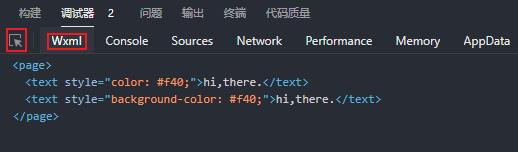

微信小程序样式文件的后缀名是 .wxss
区分全局样式和局部|页面样式
- app.wxss定义的样式是全局样式，作用于所有页面
- 每个页面的.wxss定义的样式是局部|页面样式，只作用于当前页面
微信小程序默认使用弹性盒子flex布局，也可以使用网格grid布局；更多布局请访问 Flex 、Grid
支持：
- 支持内联样式 style
- 支持外部样式导入 @import
- 支持计算函数 calc()
- 支持变量使用 var()
- 支持!important
但是：
- 不支持全局定义 :root；只能在顶级标签元素内部定义，如在page中定义
- 不支持*通配符；只能罗列所有用到的元素
- 不支持类背景图片；只能通过内联样式活定位曲线救国
- 组件库部分样式优先级高于类样式；只能使用内联样式
选择器
小程序中的选择器没有传统CSS那样丰富，特别是在组件样式中，很多不能使用，如标签选择器、ID选择器和属性选择器 - Some selectors are not allowed in component wxss,
including tag name selectors,
ID
selectors, and attribute selectors. WHY???
常用选择器如下表；更多CSS选择器使用，请查看 selector
选择器
分类
说明
类选择器
.wrap{}
ID选择器
#id{}
标签选择器
也叫元素选择器，view{}
并列选择器
,分隔； .wrap, .box{}
后代选择器
空格分隔; .wrap item{}
伪元素选择器
::before ::after ::first-letter ::first-line
结构伪类选择器
:nth-child() :first-child :last-child
尽量使用常规选择器；不要炫技
全局变量在page中定义
小程序提供了很多UI的样式，背离了结构 - 样式 - 逻辑分离的原则，不建议使用，主要是巨丑。。。
内联样式
除了使用静态内联样式，还可以和数据绑定，采用动态内联样式
样式的属性值和数据绑定 - 想绑哪个属性就绑哪个属性
<text style="color: {{color}};">hi,there.</text>
<text style="background-color: {{color}};">hi,there.</text>
<text style="backgroundColor: {{color}};">hi,there.</text>//居然不识别。。。
data: {
color:'#f40'
}
编译后，变为静态内联样式 - 使用调试器的拾取工具，单击模拟器中的元素，可以查看其结构

编译后查看结构
类
除了使用静态类，还可以和数据绑定，采用动态类
动态类，使用三元表达式；真，使用bold样式；否则不使用或者指定其它样式
类和内联样式可以共同使用；bold和normal是说声明好的样式类
<view class="{{isActive?'bold':''}}">hi, there.</view>
<view class="title {{isActive?'bold':'normal'}}">hi, there.</view>
<view class="box" style="background-image: url({{src}});">hi, there.</view>
data: {
src:'../../images/avatar.png',
isActive:false
}
样式表导入 @import
便于样式复用；如初始化样式库、模块样式库等等
仅支持相对路径；以;结束
导入初始化样式表
在样式目录下新建一个样式文件，命名为reset.wxss
初始化常用元素，如边框、轮廓、颜色、字体大小等；可以通过变量定制主题色--themeColor；使用主题颜色：var(--themeColor)
在app.wxss中引入，全局使用
@import './utils/css/reset.wxss';
有些元素的初始化样式仍然会被用户代理覆盖，请使用类的方式初始化，甚至使用!important提权
page{
--themeColor:#eb4450;
min-height: 100vh;
font-size: 28rpx;
box-sizing: border-box;
}
button{
width: 100%!important;
padding: 0;
margin: 0;
font-weight: normal;
border-radius: 0;
}
使用 阿里字体图标
可以根据需要修改iconfont.wxss的样式，如字体大小、单位、颜色等等
为避免频繁使用基类iconfont，可封装为全局组件；详情请参考 自定义组件
单位
1. rpx
物理像素 - 实际的像素点
逻辑像素 - CSS的像素单位
DPR - Device Pixel Ratio, 设备像素比：设备的物理像素与逻辑像素之比
iPhone6：375*667 dpr=2；逻辑像素是375px*667px，dpr为2，所以物理像素是750px*1334px，1个逻辑像素需要2个物理像素来显示
通常采用 iPhone6（375*667 dpr=2） 作为设计稿的标准，量取尺寸，使用rpx作为单位即可
responsive px - 响应式像素；小程序 专有 单位，用来解决屏幕适配；小程序规定任何手机屏幕的宽度都是750份，即750rpx -
逻辑像素；在不同设备上运行时，小程序会自动把rpx换算成对应的物理像素，实现适配
750rpx = 375px = 750物理像素
1rpx = 0.5px = 1物理像素
2. vw vh
将屏幕宽高分为100份
3. %
百分比
颜色
使用16进制颜色，如#ff4400；支持简写，如#f40；支持透明色，如#f406；建议使用rgba()